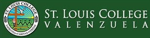
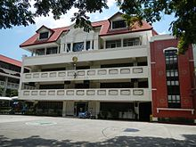

St. Louis College Valenzuela is devoted to the education and development of productive and responsible citizens molded in Christian-centered values – through proper formation and example – for the benefit and betterment of Filipino society at large.
Established in 1976 as the Philippine College of Technological Resources (PCTR), the school was founded by the educator Jose C. Olivares, who also served as the school’s first president. When actual operations began on 14 February 1978, it had facilities and amenities for secondary school and college.
A year later, the administration of the school was passed on to Emmanuel J. Olivares.
The decade of the 1980’s ushered in a demand for skilled labor in the Philippines and abroad. Recognizing an opportunity to improve the options of financially-strapped Filipino youth for employment and financial security, the college introduced technical-vocational courses.
In 1983, Agnes O. Luciano assumed the presidency. She continued to work for the continuous development and expansion of the college. A variety of short courses were also created for the benefit of out-of-school youth and enterprising homemakers through the assistance of the Rotary Club of Valenzuela.
In 1986, PCTR offered pre-school(Nursery, Junior and Senior Kindergarten), and primary school education on campus. By the end of the decade, the enrollment for the primary and secondary schools expanded dramatically, and school administrators had to meet the challenge of providing quality education up to the tertiary level.
By 1992, courses in Information Technology were offered, and in 1994, the college introduced a new course in Hotel & Restaurant Management. It was also during this period that the school expanded its facilities for laboratories, lecture rooms and libraries.
By the mid-1990’s, an opportunity for PCTR to link with St. Louis University (SLU) and its affiliated schools presented itself after a consultation with the Belgian Roman Catholic missionary order Congregatio Immaculati Cordis Mariae, the schools’ administrators. The order, better known as the CICM Missionaries, have a proven track record since the 19th century in providing its schools with exceptional training and support in faculty development, graduate studies and Christian formation.
In 1997, PCTR was admitted as an affiliate school of the St. Louis Educational System, under the SLU Superintendent of Schools. (At present, however, the Office of the Superintendent of Schools is vacant and inactive.) Within the year, PCTR formally changed its name to St. Louis College Valenzuela.
In 2002, Raymond O. Luciano assumed the presidency of St. Louis College Valenzuela with the death of Agnes O. Luciano. Since then, a continuing program of expansion and modernization has seen the addition of a new site for a pre-school and elementary school along Barangay Ugong in Valenzuela City, and the installation of a new fire alarm system, closed-circuit security cameras, emergency lighting and a Wi-Fi system inside the main campus. The modernization program has also covered the school’s science laboratories, library and audio-visual facilities.
Today, St. Louis College Valenzuela has matured into an educational institution that the city of Valenzuela can be proud of. Its faculty is a richly diverse group of men and women dedicated to promote a Christian-centered education for a new generation of Filipino youth ready to face the challenges of the 21st century. Its students, coming from a broad cross-section of Filipino society, are active participants in the promise and the future of the Philippines, and their contributions to the Filipino dream as productive and responsible citizens will surely be a measure of distinction for all.
